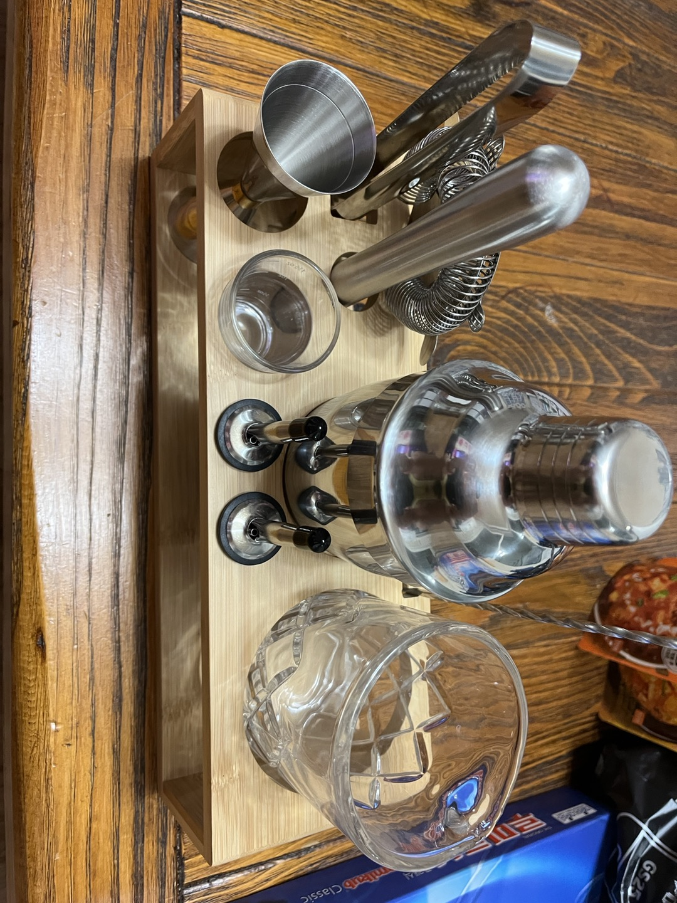
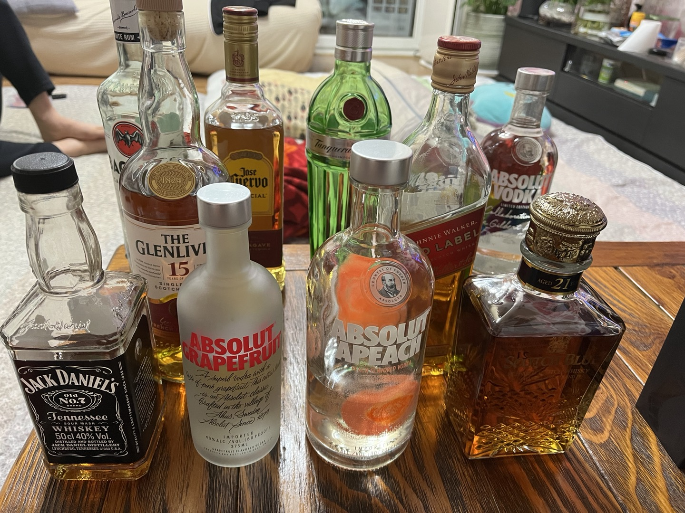
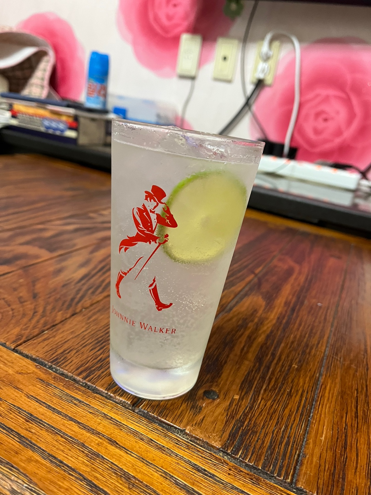
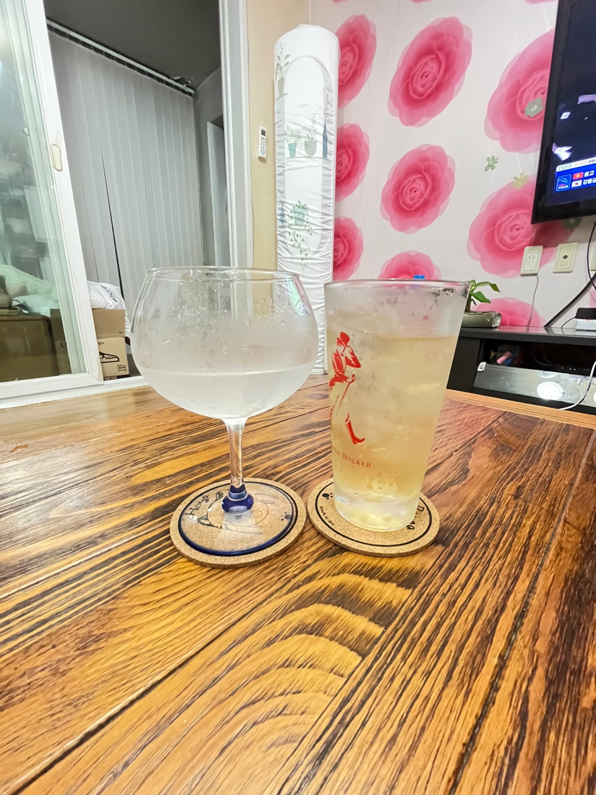

취미
- 게임
리그오브 레전드(lol), 원신을 주로 한다.


- 스포츠
축구 : 현재는 보는 것을 좋아함(손흥민의 토트넘 경기)
농구 : NBA를 보거나 직접 하는 것을 좋아함
배구 : 대한항공팀을 응원하며 즐겨 봄
- 술
작년부터 칵테일의 관심을 가지면서 여러가지 술을 맛보고 직접 칵테일을 만들어 보고 있음
    칵테일 도구 각종 술들 진토닉 화이트레이디, 위스키 하이볼